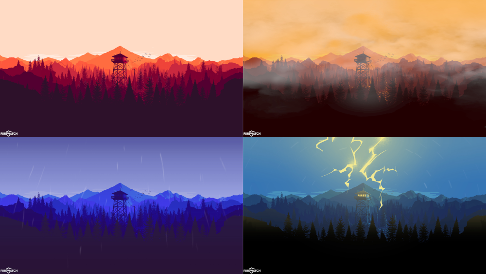

Privacy Ninja
This program allows you to use a raspberry pi with a motion sensor to close all incogitio tabs on you computer when motion is detected. If used with a battery bank this can be done compleatly wirelessly. You can decide the usecases youselfs.
See more

Weather Background
Weather Background is a program that automatically changes your desktop background based on the weather conditions outside and the time of day (morning, day, evening, and night). Programs like this exist already; however, they are not open source...
See moreK-Means Clustering
This video provides a little background behind how a common AI model, K-means clustering, makes decisions as well as a demonstration of the code in action written from scratch. The code used in this project is linked above for download at my ...
See more